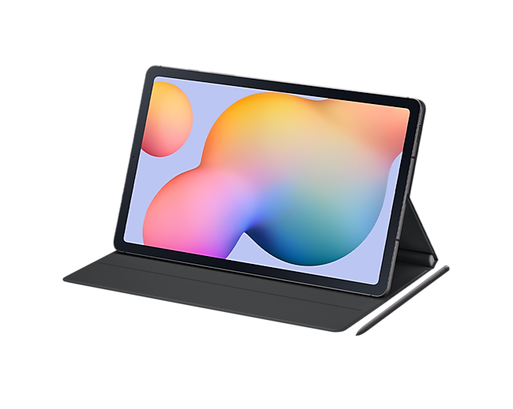
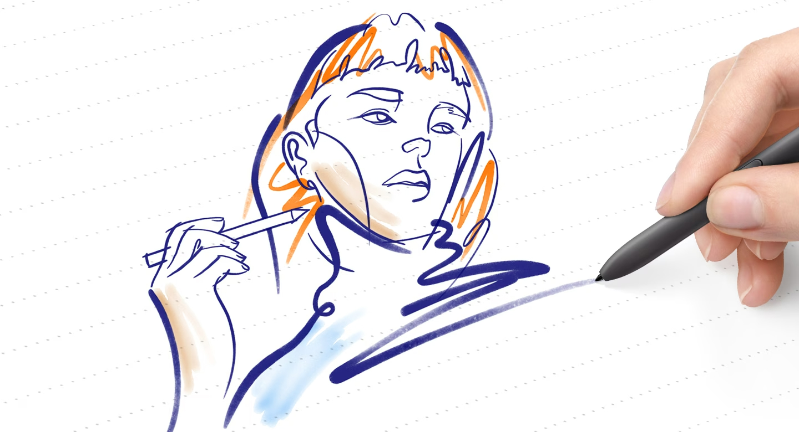
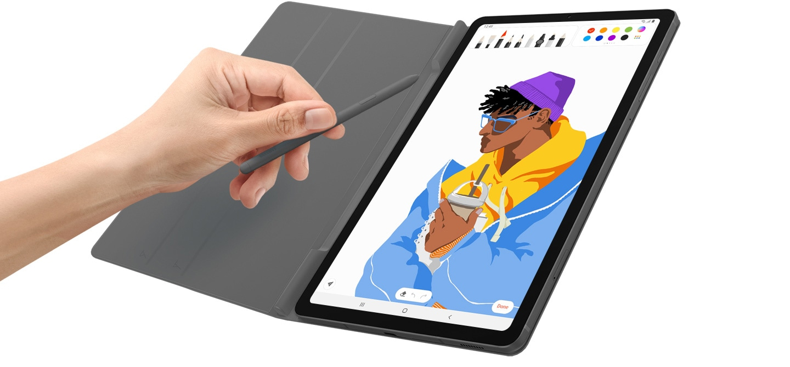

Galaxy Tab S6 Lite
O Samsung Galaxy Tab S6 Lite é um tablet Android acessível, com uma
tela de 10,4
polegadas, uma caneta S Pen inclusa e desempenho sólido para tarefas
do dia a dia,
tornando-o uma opção interessante para quem busca um tablet versátil
a um preço
competitivo.
R$ 1.650
Amazon

Tome boas anotações.
O Galaxy Tab S6 Lite é um tablet portátil com uma tela grande de 10,4 polegadas, design fino e leve. Vem com a One UI 5.1 no Android 13, inclui a S Pen e capa protetora na caixa, pronto para ser usado. É ideal para desenhar, aprender ou jogar, tornando-se o tablet perfeito para várias atividades.
Com acessórios inclusos para elevar sua confiança e estilo
O Galaxy Tab S6 lite vem com uma capa elegante que é tão estilosa quanto conveniente. A Capa protetora vem na cor do seu novo tablet, ela dobra e prende magneticamente, para garantir mais segurança quando você for sair por aí. Tem até um compartimento para acoplar a S Pen, então você pode ter certeza de que os acessórios estarão sempre juntos sem risco de perder ou esquecer.
A S Pen é um conjunto de instrumentos de escrita. Ela é ergonômica, com baixa latência e impressionante sensibilidade à pressão faz dela a sua ferramenta favorita para tudo, desde desenho até edição de documentos. E graças a fixação magnética com o tablet você não vai perder sua S Pen.